Figure 5.4 — The duplicate warning identifies similar elements already in the repository and recommends forking.
Figure 5.4 — The duplicate warning identifies similar elements already in the repository and recommends forking.Version 1.0 · March 2026 ACR–RSNA Common Data Elements Initiative
The RadElement CDE Authoring Platform is a web application for creating, editing, and reviewing Common Data Elements (CDEs) — the standardized vocabulary that enables consistent structured reporting across radiology practices.
A CDE is a precisely defined observation that a radiologist makes during a study. Rather than reporting findings in free-text prose (where terminology varies from radiologist to radiologist), structured reporting relies on agreed-upon elements with controlled vocabularies. For example:
| Free-text | Structured CDE |
|---|---|
| "There is a small nodule in the right lower lobe" | Pulmonary Nodule Presence: present / absent / indeterminate |
| "The nodule measures approximately 6 mm" | Pulmonary Nodule Size (mm): 6 |
CDEs are organized into CDE Sets — logical groupings that cover a specific clinical scenario (e.g., "CT Pulmonary Nodule Characterization").
Navigate to the platform URL. If you are not signed in you will be directed to the login page.
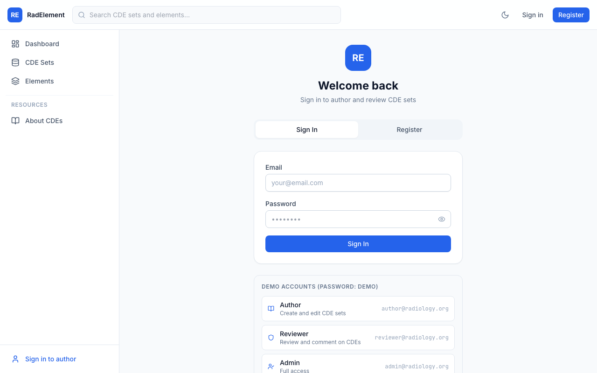
Figure 2.1 — The login page. Demo accounts are available for testing.Enter your email and password, then click Sign In. The platform includes the following demo accounts (password: demo for all):
| Role | Capabilities | |
|---|---|---|
| Author | author@radiology.org | Create and edit CDE sets |
| Reviewer | reviewer@radiology.org | Review and comment on submitted sets |
| Admin | admin@radiology.org | Full access |
Note: This is a demonstration platform. All accounts and data are stored locally in your browser.
After signing in you will see the main dashboard with a persistent left sidebar for navigation.
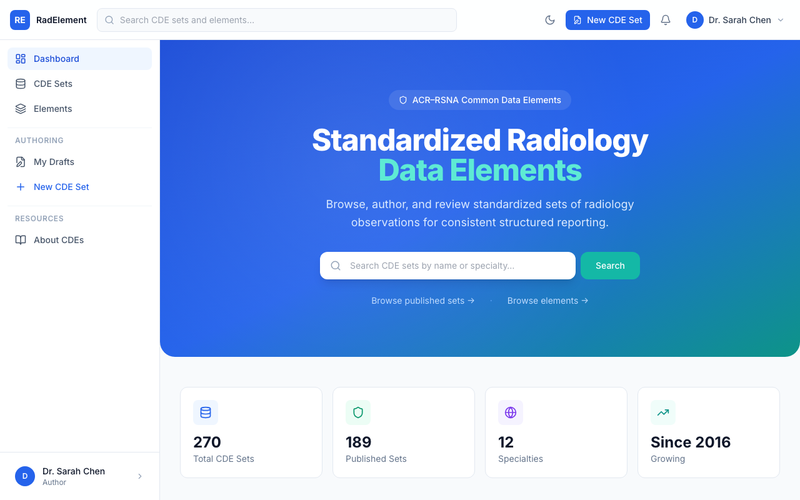
Figure 2.2 — The main dashboard. The left sidebar provides access to all major sections.| Sidebar Item | Description |
|---|---|
| Dashboard | Home screen with platform statistics and recent sets |
| CDE Sets | Browse all published CDE sets |
| Elements | Browse all individual CDE elements |
| My Drafts | Your saved draft CDE sets in progress |
| + New CDE Set | Start authoring a new CDE set |
| About CDEs | Reference material on the CDE standard |
The top navigation bar provides:
The search box in the top navigation bar searches across all published CDE sets and elements simultaneously.
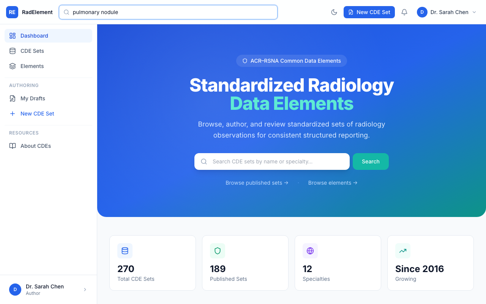
Figure 3.1 — Global search returns matching CDE sets and elements as you type.Type at least two characters to activate search. Results appear in a dropdown organized by sets and elements. Click any result to navigate directly to it.
Click CDE Sets in the sidebar to browse all published sets.
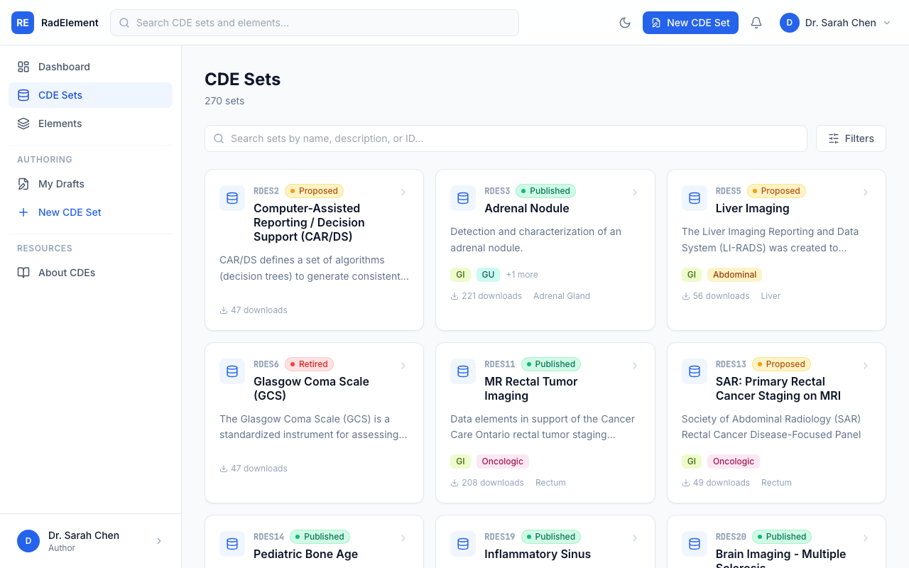
Figure 3.2 — The CDE Sets browser. Sets can be filtered by specialty, modality, and status.From this page you can:
Click Elements in the sidebar to browse all individual data elements across all published sets.
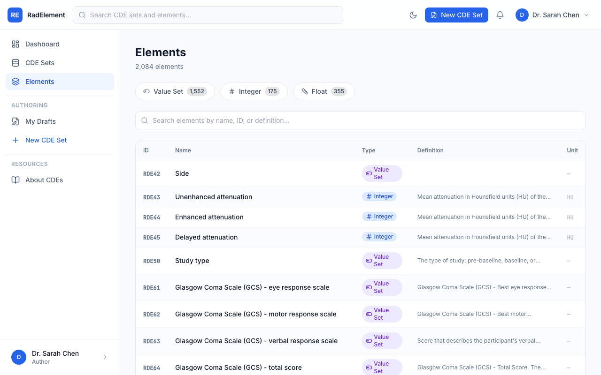
Figure 3.3 — The Elements browser. Useful for finding an existing element before creating a new one.This is particularly useful when checking whether an element you intend to author already exists in the repository. Searching here before creating new elements helps avoid duplication.
Click + New CDE Set in the sidebar or the button in the top navigation bar. A new draft will be created and you will be taken to the CDE Editor.
The editor opens on the Set Info tab, where you provide the metadata that contextualizes all elements in the set.
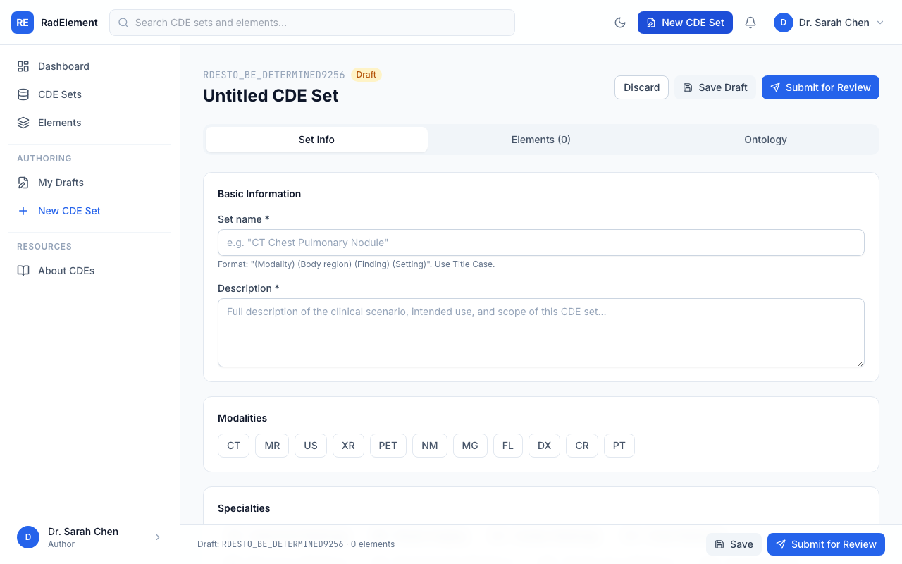
Figure 4.1 — A new CDE Set editor with the Set Info tab active.Enter the name of the CDE set in the Set name field.
Naming convention: Follow the format
(Modality) (Body region) (Finding) (Setting). Use Title Case. Example:CT Chest Pulmonary Nodule
Provide a full clinical description in the Description field. This should explain the clinical scenario the set addresses, its intended use, and the scope of elements it contains. A thorough description is required — the platform will warn you if it is too brief.
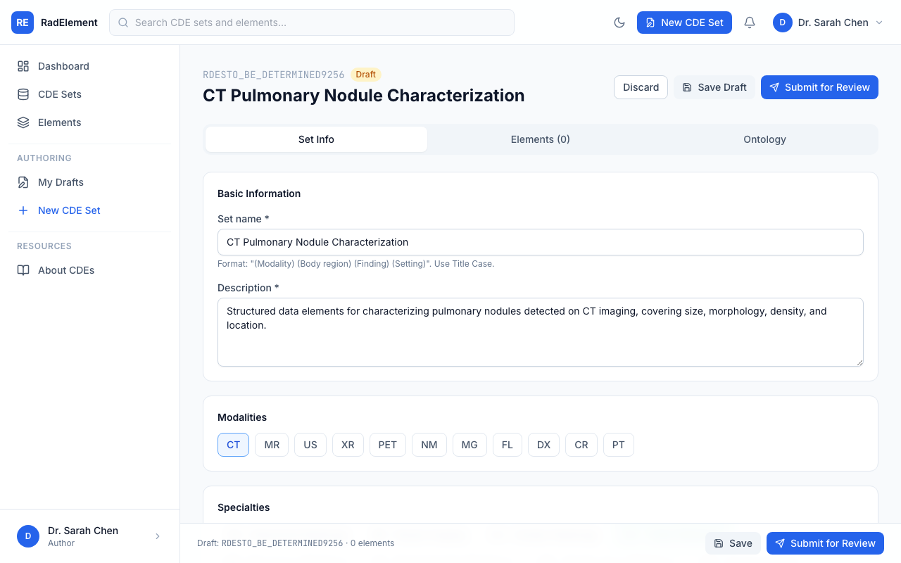
Figure 4.2 — Set Info with name, description, CT modality, and Chest Radiology specialty selected.Select all imaging modalities for which this CDE set is applicable by clicking the modality toggle buttons.
Available modalities: CT, MR, US, XR, PET, NM, MG, FL, DX, CR, PT
Buttons toggle on/off — highlighted buttons are selected. Multiple modalities can be selected.
Select all relevant radiology specialties from the Specialties section. Like modalities, specialties are toggle buttons — click to select or deselect.
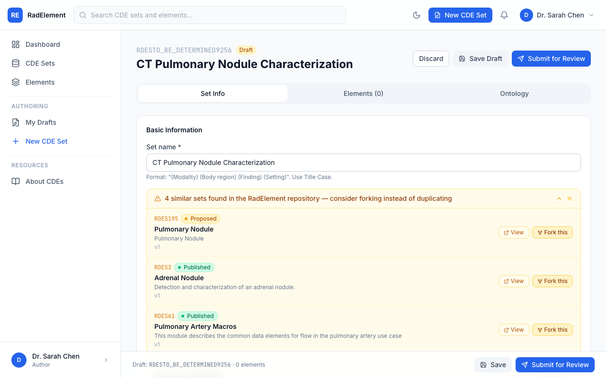
Figure 4.3 — CT modality selected, CH – Chest Radiology specialty selected (highlighted with border).Available specialties include: AB (Abdominal), BR (Breast), CA (Cardiac), CH (Chest), ER (Emergency), GI (Gastrointestinal), GU (Genitourinary), HN (Head and Neck), IR (Interventional), MI (Molecular Imaging), MK (Musculoskeletal), NR (Neuroradiology), OB (OB-Gyn), OI (Oncologic), PD (Pediatric), QI (Quality Improvement), RS (Radiation Safety), VI (Vascular and Interventional).
The Body Parts section links the CDE set to specific anatomical locations using standardized ontology codes.
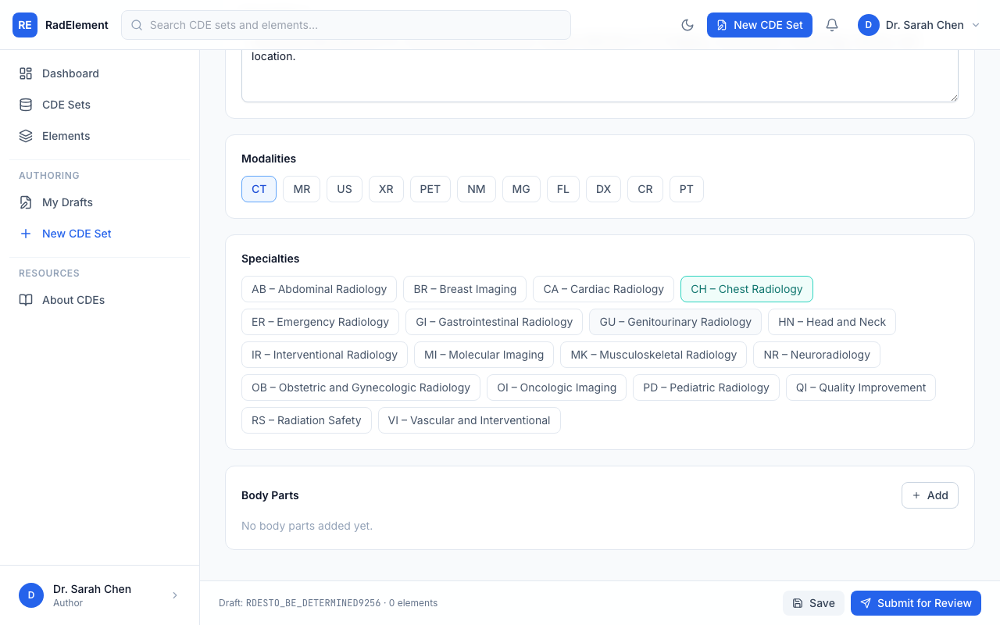
Figure 4.4 — The Body Parts section at the bottom of the Set Info tab.Click + Add to add a body part row. Type in the input field — a live ontology suggestion dropdown will appear, searching both RadLex and SNOMED CT simultaneously.
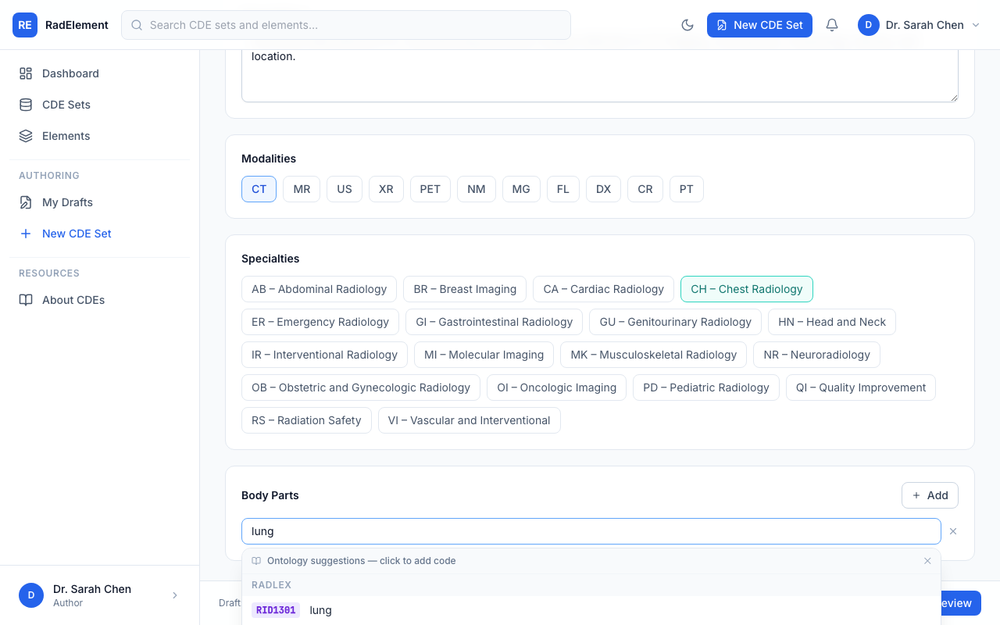
Figure 4.5 — Typing "lung" in a body part field reveals RadLex matches (RID1301 "lung", etc.) with ontology codes.To link an ontology code to a body part:
You may add multiple body parts by clicking + Add again. Remove a body part by clicking the × button at the end of the row.
Click the Elements tab at the top of the editor to switch to the element authoring view.
When the set has no elements yet, the Elements tab shows an empty state with an + Add Element button.
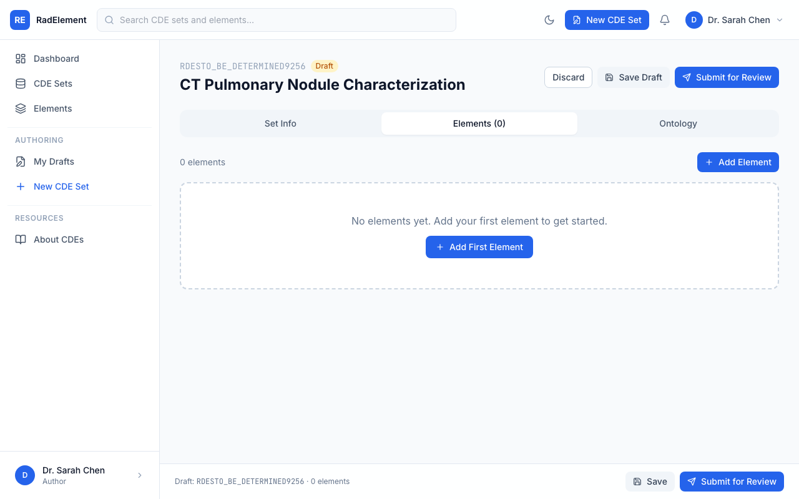
Figure 5.1 — The Elements tab before any elements have been added.Click + Add Element to add a new element. A new element card will appear, defaulting to Value Set type.
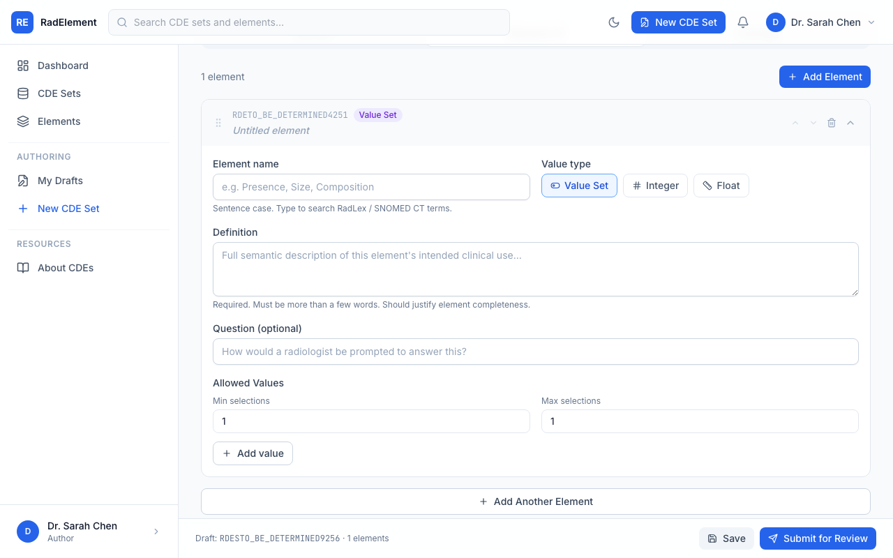
Figure 5.2 — A new element card with Element name, Value type selector, Definition, and Question fields.Type the element name in the Element name field. As you type, a live ontology suggestion dropdown appears showing matching terms from RadLex (via NCBO BioPortal — full 34,000+ term lexicon) and SNOMED CT.
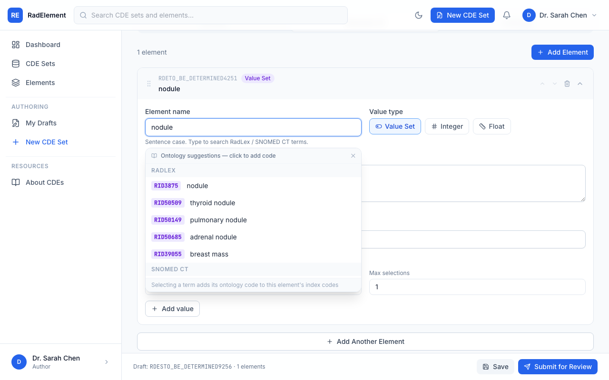
Figure 5.3 — Typing "nodule" shows RadLex terms (RID3875 nodule, RID50509 thyroid nodule, etc.) and SNOMED CT terms.How the ontology suggest works:
index_codesTip: You do not have to select a term from the dropdown — you can type any name you prefer. The ontology suggest is an optional enhancement that attaches machine-readable codes; it does not constrain what you can enter.
After typing an element name, the platform automatically checks the RadElement repository for similar existing elements. If matches are found, a yellow warning banner appears below the name field.
Figure 5.4 — The duplicate warning identifies similar elements already in the repository and recommends forking.
The warning shows:
Best practice: Review the listed elements before proceeding. If an existing element meets your needs, consider referencing it rather than creating a new one. Duplicates fragment the standard and reduce interoperability.
A Value Set element presents a controlled list of choices (e.g., present / absent / indeterminate). This is the most common element type in radiology CDEs.
Use the Value type buttons to the right of the element name to select the type:
 Figure 5.5 — The three value types: Value Set (selected), Integer, and Float.
Figure 5.5 — The three value types: Value Set (selected), Integer, and Float.
Scroll down to the Allowed Values section to configure the value set.
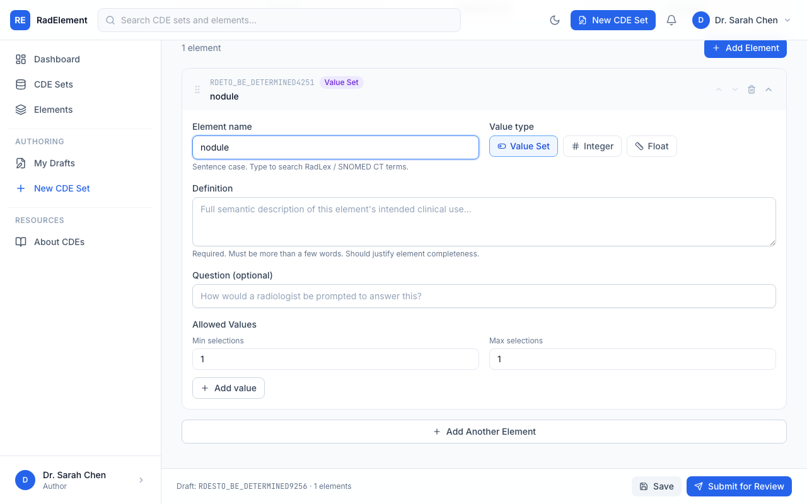
Figure 5.6 — The Allowed Values section showing Min/Max selections and the Add value button.| Field | Description |
|---|---|
| Min selections | Minimum number of values the radiologist must choose (typically 1) |
| Max selections | Maximum number of values allowed (1 = single select, >1 = multi-select) |
Click + Add value to add a value row. Each row contains:
| Column | Description |
|---|---|
| Index (grey) | Auto-assigned row number |
| value | Machine-readable code string (e.g., present, absent, 1) |
| Display name | Human-readable label shown in reporting tools |
| Definition | Optional longer description of this specific value |
| × | Remove this value row |
The Display name field in each value row supports the same ontology suggestion as the element name field. Clicking into the field and typing will show matching RadLex and SNOMED CT terms.
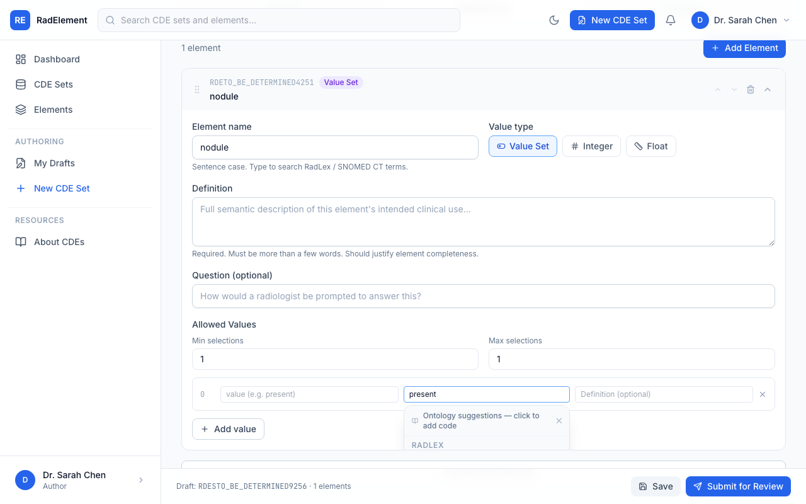
Figure 5.7 — Typing "present" in a value's Display name field shows matching ontology terms for "present" from RadLex and SNOMED CT.When you select a term from the dropdown, the display name is filled and the ontology code is stored in the value's index_codes. A "N code(s)" badge appears next to the display name field to confirm the code was attached.
Select Integer from the Value type buttons to author a numeric element that accepts whole-number responses.
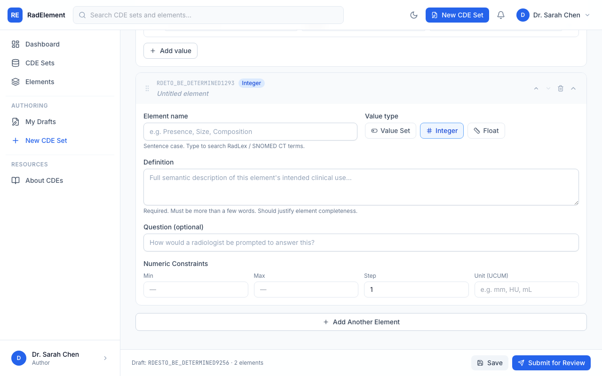
Figure 5.8 — An Integer element showing the Numeric Constraints section (Min, Max, Step, Unit).| Field | Description |
|---|---|
| Min | Minimum acceptable value (leave blank for no lower bound) |
| Max | Maximum acceptable value (leave blank for no upper bound) |
| Step | Increment size (default: 1 for integers) |
| Unit (UCUM) | Unit of measure in Unified Code for Units of Measure notation (e.g., mm, HU, mL) |
Example: A "Nodule Size" element would have Min = 0, Max = 300, Step = 1, Unit =
mm.
Select Float from the Value type buttons to author a numeric element that accepts decimal values (e.g., SUV measurements, attenuation values).
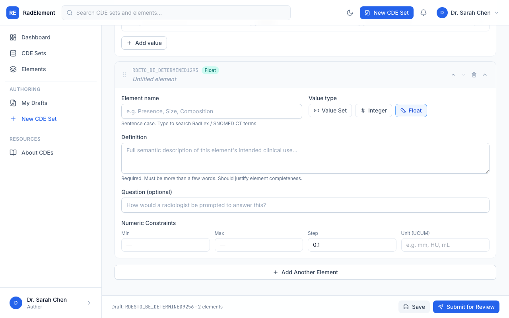
Figure 5.9 — A Float element. The same Numeric Constraints fields apply as for Integer, but decimal precision is allowed.Float elements use the same Numeric Constraints fields (Min, Max, Step, Unit) as Integer elements. The Step field here accepts decimal values (e.g., 0.1 for one decimal place).
Each element card has controls in its top-right corner:
| Control | Function |
|---|---|
| ↑ / ↓ arrows | Move the element up or down in the set order |
| 🗑 trash icon | Delete the element |
| ▲ collapse | Collapse the element card to save screen space |
Multiple elements can be open simultaneously. Click + Add Another Element at the bottom of the page to add additional elements without scrolling to the top.
The Ontology tab provides a dedicated full-page search interface for looking up and attaching ontology codes to the CDE set as a whole (set-level index_codes).
Click the Ontology tab in the editor to access it.
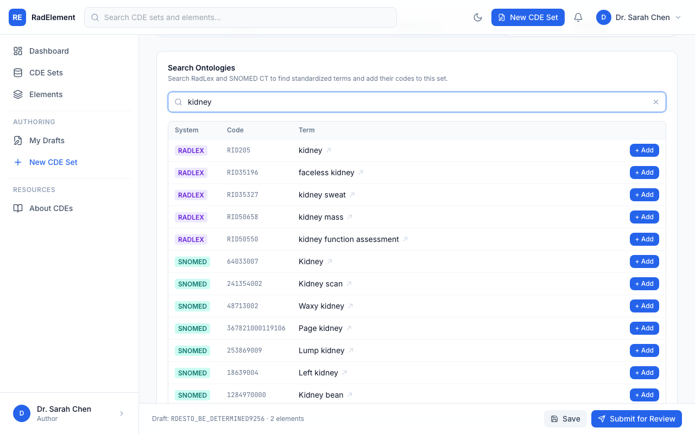
Figure 6.1 — The Ontology tab. Searching "kidney" returns RadLex terms (purple badges) and SNOMED CT terms (teal badges), each with a "+ Add" button.Type a clinical term in the search box. Results appear in a table with columns:
| Column | Description |
|---|---|
| System | Source ontology: RADLEX (violet badge) or SNOMED (teal badge) |
| Code | The ontology's unique identifier (e.g., RID205 or 64033007) |
| Term | Human-readable label. The ↗ icon opens the term in the external ontology browser |
| + Add | Adds this code to the set's index codes |
Click + Add next to any term to attach it to the CDE set. The button will change to show the code has been added, and the set's index_codes array will be updated. These set-level codes declare what clinical concepts the entire CDE set covers — useful for downstream discovery and FHIR integration.
RadLex vs. SNOMED: RadLex is purpose-built for radiology and is the preferred source for imaging findings and anatomy. SNOMED CT is a broader clinical terminology useful for clinical conditions, procedures, and body structures. Both are shown together and either can be used.
The editor status bar and action buttons appear consistently at the top of every editor screen.
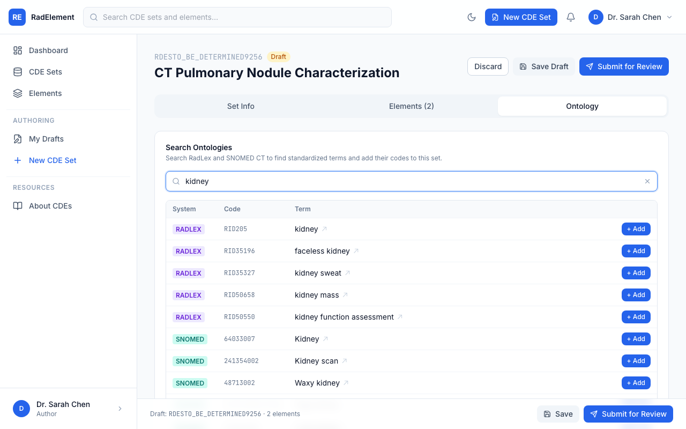
Figure 7.1 — The editor toolbar with Discard, Save Draft, and Submit for Review buttons.| Button | Action |
|---|---|
| Discard | Discard unsaved changes and revert to the last saved state (or delete the draft if it was never saved) |
| Save Draft | Save the current state as a draft. The set remains private and editable. |
| Submit for Review | Submit the set for editorial review. Status changes to "Under Review" and the set becomes visible to Reviewers. |
The bottom status bar shows the draft ID and element count in real time (e.g., "Draft: RDESTO_BE_DETERMINED4142 · 2 elements").
Tip: Save drafts frequently. The platform does not auto-save. Navigating away without saving will prompt a warning.
Click My Drafts in the sidebar to see all draft CDE sets you are currently working on.
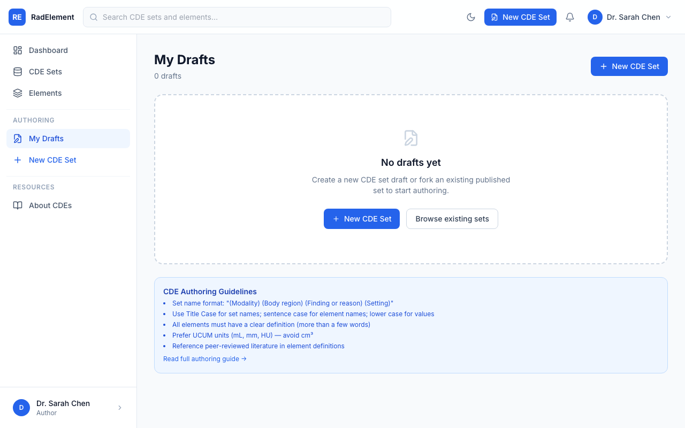
Figure 8.1 — The My Drafts page lists all in-progress sets with their status and last modified date.From this page you can:
The platform queries two live ontology services to power all suggestion features:
RID prefix followed by a number (e.g., RID3875)https://data.bioontology.org/search?ontologies=RADLEX39607008)https://browser.ihtsdotools.org/snowstorm| Location | How to attach codes |
|---|---|
| Element name | Type in the Element name field → select from the inline dropdown |
| Body part name | Type in a Body Part field → select from the inline dropdown |
| Value display name | Type in a value's Display name field → select from the inline dropdown |
| Set-level codes | Use the dedicated Ontology tab search + "+ Add" |
All attached codes are stored in index_codes arrays on the respective object (set, element, or value) and are exported in the standard RadElement JSON schema for downstream consumption.
RadElement CDE Authoring Platform · ACR–RSNA Common Data Elements · © 2026